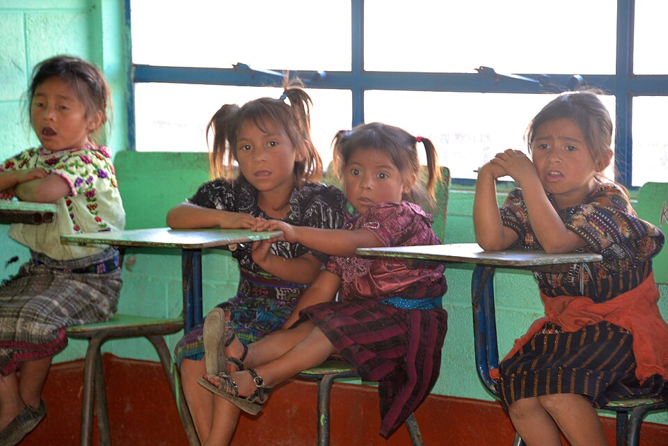
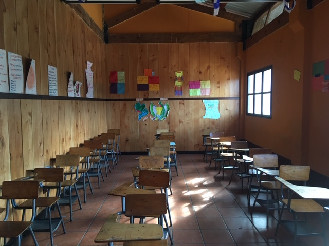
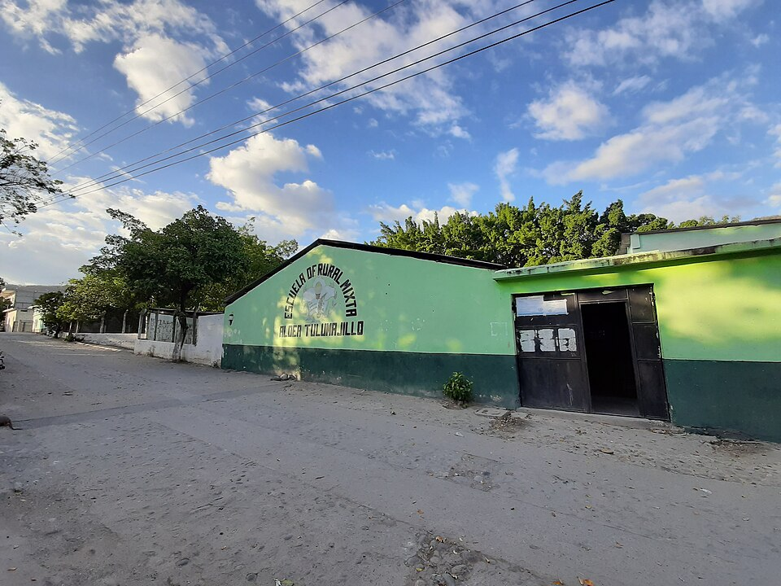

Desarrollo humano
Conoce el IDH, sus dimensiones y la evolución de Guatemala.
Explorar capítulo ↗REVISTA DIGITAL INTERACTIVA · 2026
Una mirada crítica e interactiva al desarrollo humano, la educación, la salud y la migración en Guatemala.
Explorar la revista ↗DESCUBRE GUATEMALA
Explora los desafíos y las oportunidades del desarrollo humano en Guatemala.
Conoce el IDH, sus dimensiones y la evolución de Guatemala.
Explorar capítulo ↗Explora las oportunidades educativas y la brecha digital.
Explorar capítulo ↗Conoce las diferencias en el acceso a servicios sanitarios.
Explorar capítulo ↗Comprende los riesgos de la migración irregular y la importancia de la protección.
Explorar capítulo ↗Explora el desempleo por pueblo de pertenencia y las diferencias en la informalidad.
Explorar capítulo ↗Descubre sus principales usos y el ingreso de remesas durante 2026.
Explorar capítulo ↗CAPÍTULO 01 / DESARROLLO HUMANO
El desarrollo humano es un concepto que busca mejorar la calidad de vida de las personas, tomando en cuenta que el progreso de un país no depende únicamente de cuánto dinero produce, sino también de las oportunidades que tienen sus habitantes para estudiar, cuidar su salud y vivir en buenas condiciones. Esto significa que una sociedad puede crecer económicamente, pero si muchas personas siguen enfrentando dificultades para acceder a servicios básicos, ese crecimiento no necesariamente representa una mejora en la vida de todos. Por eso, el desarrollo humano se enfoca en crear oportunidades que permitan a las personas alcanzar sus metas y tener un mejor futuro (Programa de las Naciones Unidas para el Desarrollo [PNUD], 2025).
Para conocer cómo se encuentra un país en este aspecto, se utiliza el Índice de Desarrollo Humano (IDH), una herramienta que toma en cuenta tres dimensiones importantes: la salud, la educación y el nivel de vida. La salud se relaciona con los años que se espera que viva una persona, la educación considera los años de estudio y el nivel de vida se relaciona con los ingresos de la población, de esta manera, el IDH permite comparar las condiciones de desarrollo entre diferentes países, aunque es importante recordar que un solo indicador no puede mostrar todas las dificultades o desigualdades que existen dentro de una sociedad (PNUD, 2025).
En el caso de Guatemala, hablar de desarrollo humano significa reconocer que no todas las personas tienen las mismas oportunidades, ya que las condiciones de vida pueden cambiar dependiendo de la comunidad donde viven, sus recursos económicos y el acceso que tienen a servicios como educación y salud. Estas diferencias se pueden observar especialmente al comparar las áreas urbanas y rurales, por lo que es importante conocer las distintas realidades del país y comprender cómo influyen en el bienestar de la población (PNUD, 2022).
Según el Informe sobre Desarrollo Humano 2025, Guatemala obtuvo un IDH de 0.662 en 2023, un dato que nos ayuda a conocer su situación y compararla con otros países de la región. Sin embargo, más allá de las cifras, lo importante es comprender qué representan estos resultados en la vida diaria de las personas y qué cambios podrían ayudar a construir una Guatemala con mejores oportunidades para todos (PNUD, 2025).
APRENDE INTERACTUANDO
Selecciona una dimensión para conocer sus indicadores.
Haz clic en cualquiera de las tarjetas.
Fuente: PNUD (2025).
ANÁLISIS COMPARATIVO
Valores del IDH correspondientes a 2023, publicados en 2025.
| País | IDH | Posición mundial |
|---|---|---|
| México | 0.789 | 81 |
| Bolivia | 0.733 | 108 |
| Guatemala | 0.662 | 137 |
| Honduras | 0.645 | 139 |
México y Bolivia presentan valores superiores al de Guatemala, mientras que Honduras registra un valor ligeramente inferior. Estas diferencias nos invitan a reflexionar sobre las oportunidades de salud, educación e ingresos, aunque los promedios nacionales no muestran todas las desigualdades que existen dentro de cada país (PNUD, 2025).
Fuente: PNUD (2025).
EVOLUCIÓN HISTÓRICA
Explora la evolución del IDH de Guatemala entre 2014 y 2023.
El desarrollo humano no siempre avanza de manera constante, ya que pueden existir períodos de mejora y otros de retroceso. Por eso es importante observar los cambios a lo largo del tiempo y no solamente el resultado de un año.
Fuente de consulta: PNUD (2025). Serie de trabajo pendiente de comprobación final año por año.
DATOS PARA REFLEXIONAR
Selecciona una tarjeta para aprender más.
Selecciona una tarjeta.
Fuente: PNUD (s. f.).
HISTORIAS DETRÁS DE LAS CIFRAS
Tres experiencias documentadas por UNICEF que muestran la importancia de las oportunidades en Guatemala.
Educación, independencia y nuevas oportunidades.
La libertad de decidir sobre su futuro.
Ciencia, tecnología y oportunidades para crecer.
TESTIMONIO DOCUMENTADO
Fotografías documentales disponibles en los reportajes originales de UNICEF, con sus respectivos créditos.
COMPRUEBA LO APRENDIDO
Responde cuatro preguntas y descubre tu puntuación.
REFLEXIÓN PERSONAL
Estas reflexiones son ejemplos que el equipo podrá adaptar a sus experiencias.
Para nosotros, el desarrollo humano significa que todas las personas tengan oportunidades para vivir mejor, estudiar, cuidar su salud y cumplir sus metas. No se trata solamente de que un país tenga más dinero, sino de que sus habitantes puedan disfrutar de una buena calidad de vida y tomar decisiones sobre su futuro. Consideramos que una sociedad se desarrolla cuando sus oportunidades llegan a más personas, sin importar dónde viven o cuáles son sus condiciones económicas.
El IDH se relaciona con nuestra vida diaria porque sus dimensiones están presentes en muchas de las actividades que realizamos. Por ejemplo, cuando asistimos a clases estamos aprovechando una oportunidad educativa, mientras que al acudir a un centro de salud o contar con ingresos para cubrir nuestras necesidades podemos reconocer otras dimensiones del desarrollo humano. Sin embargo, sabemos que estas oportunidades no están disponibles de la misma manera para todos.
Consideramos que tres aspectos importantes son la desigualdad económica, las dificultades para acceder a una educación de calidad y las diferencias en los servicios de salud. Cuando una familia no cuenta con recursos suficientes, puede tener problemas para cubrir sus necesidades, continuar estudiando o recibir atención médica, por eso creemos que mejorar estas condiciones ayudaría a crear oportunidades más justas para la población.
Ahora escribe tus propias respuestas. Podrás copiarlas sin enviarlas a ningún servidor.
CAPÍTULO 02 / EDUCACIÓN
Historias reales, diversidad lingüística y condiciones para continuar estudiando en Guatemala.
01 / INTRODUCCIÓN
Gracias a la educación se pueden desarrollar habilidades que nos permiten comprender el mundo, tomar decisiones y participar en las comunidades de las que somos parte. Aprender a leer, resolver problemas y poder expresar ideas amplía las posibilidades de seguir estudiando y prepararse para el trabajo futuro. Dentro del país, hablar acerca de la educación también nos hace reconoce las distintas condiciones en las que muchos estudiantes viven y aprenden.
Para muchas familias, poder seguir estudiando se vuelve una carga pesada, que implica afrontar gastos de todo tipo, como de transporte y de recursos, o buscar un centro educativo que se encuentre lejos de sus lugares de residencia. Con estas dificultades presentadas a diario se interrumpen los estudios de las familias.
El idioma es una pieza importante en la educación y merece atención. En Guatemala existen muchas comunidades lingüísticas, lo que representa una dificultad puesto que la enseñanza debe de considerar la lengua y la cultura de quienes aprenden. La UNESCO menciona y resalta que aprender y estudiar en la lengua materna favorece en gran medida a la comprensión y ayuda a preservar el patrimonio cultural. Esta capitulo de la revista busca presentar diferentes experiencias de estudiantes guatemaltecos y algunos datos que ayudaran a comprender la realidad que muchas personas viven día con día. Sus historias nos permiten observar qué apoyos hacen falta para poder seguir aprendiendo y por qué las condiciones de un centro educativo afectan al aprendizaje. Aprender en buenas condiciones Los centros educativos, los recursos para enseñar y el acceso a herramientas digitales son una parte de las condiciones para aprender. El plan estratégico institucional 2025-2029 del Ministerio de Educación incluye entre sus prioridades la infraestructura, la calidad de la educación, la reducción de la brecha digital y la educación bilingüe intercultural. A pesar de ser líneas de acción que están incluidas dentro del plan, aún no han sido resultas.
Las experiencias documentadas en este capítulo muestran que las oportunidades educativas dependen de algo más que la matrícula: también importan la seguridad de los espacios, los materiales disponibles, el acompañamiento y la posibilidad de aprender nuevas tecnologías. La continuidad educativa requiere reconocer esas necesidades y responder a ellas desde las comunidades y las instituciones.
02 / EXPERIENCIAS REALES
Testimonios publicados por UNICEF. Los datos de edad y grado corresponden a la fecha de publicación de cada historia.
Caty cursaba segundo año de Perito Contador cuando UNICEF publicó su historia en enero de 2026. Se trasladó a la residencia de la Asociación Ixmucané para continuar estudiando; también elaboraba tejidos y logró comprar una computadora.
«En Ixmucané tengo un lugar seguro donde vivir, apoyo para seguir estudiando y la oportunidad de aprender muchas cosas nuevas»Historia original · UNICEF ↗
Cuando se documentó su experiencia en 2022, Sarahí cursaba sexto primaria. Tras los daños provocados por Eta e Iota en 2020, UNICEF informó de reparaciones en techos, electricidad y baños de su escuela.
«De grande quiero llegar a la universidad y tener la escuela en buenas condiciones me lo va a permitir»Historia original · UNICEF ↗
En febrero de 2026, UNICEF relató la experiencia de una adolescente de 16 años que participó en un programa de habilidades STEAM y desarrolló con su equipo lámparas LED activadas por movimiento.
«Quiero que las niñas vean que también pueden hacerlo»Historia original · UNICEF ↗
03 / ESCUELAS Y ESPACIOS DE APRENDIZAJE
Imágenes documentales incluidas en la investigación, con autoría y licencias identificadas. No se atribuye carácter urbano a fotografías cuya ubicación no está clasificada como tal en la fuente.



04 / EXPLORA Y APRENDE
Seleccioná una tarjeta para conocer datos y ejemplos recogidos en la investigación.
05 / INDICADORES EDUCATIVOS
Explorá la alfabetización, los años de estudio, la deserción escolar y la brecha digital para conocer algunas desigualdades educativas en Guatemala.
05 / DIFERENCIAS URBANAS-RURALES
Compará los años de escolaridad promedio de la población indígena y no indígena según su área de residencia. Estos datos corresponden a personas de 15 años o más, según el Censo 2018.
La diferencia urbana-rural era de 1,8 años entre la población indígena y de 3,0 años entre la no indígena. Los datos muestran desigualdades, pero no permiten atribuirlas a una sola causa.
Fuente: Us et al. (2022), gráfica 72, p. 93. Consultar investigación ↗
06 / ACTIVIDADES DE REFLEXIÓN
Caso ficticio: una estudiante vive lejos del instituto, tiene dificultades para pagar el transporte y no cuenta con internet en casa. ¿Qué apoyo podría ayudarla? Seleccioná las propuestas para analizar sus posibilidades y límites.
No hay una única respuesta correcta. Compará qué barrera atiende cada propuesta y qué recursos necesita.
Tu respuesta no se envía ni se guarda. Copiala si querés conservarla.
Instituto Nacional de Estadística. (2019). Resultados del XII Censo Nacional de Población y VII de Vivienda: Censo 2018. https://censo2018.ine.gob.gt/archivos/resultados_censo2018.pdf
Instituto Nacional de Estadística. (2021). Compendio estadístico de pueblos 2018. https://www.ine.gob.gt/sistema/uploads/2021/12/30/20211230192119ITIf0Taxw7mbshQNenoLw9A9K5cR4pMt.pdf
Us, H., Mendoza, C., & Guzmán, V. (2022). Pueblos indígenas en Guatemala: Desafíos demográficos, lingüísticos y socioeconómicos: Análisis comparativo de los censos 2002 vs 2018. Banco Interamericano de Desarrollo. https://doi.org/10.18235/0003883
Vicepresidencia de la República de Guatemala. (s. f.). 7.2 Desarrollo social. https://www.vicepresidencia.gob.gt/politica-gobierno-2024-2028/72-desarrollo-social
07 / FUENTES Y CRÉDITOS
Fotografías: David Amsler (CC BY 2.0), Martinezeu (CC BY-SA 4.0) y Kevin Salvatierra (CC BY-SA 4.0). Enlaces a las obras originales en cada pie de foto.
CAPÍTULO 03 / SALUD COMUNITARIA
01 / CONTEXTO
La salud dimensiona el desarrollo humano al influir en las oportunidades de estudiar, participar en la comunidad, trabajar y construir un proyecto de vida. Una enfermedad a la cual no se le dé un seguimiento adecuado, puede complicarse e interrumpir la educación o los ingresos familiares. Debido a esto, es importante que se comprenda tanto la situación de vida en Guatemala como la accesibilidad a recursos médicos y las posibilidades para utilizarlos. Estos indicadores permiten que ciertos avances y necesidades sean reconocidos. La esperanza de vida al nacer resume las condiciones de mortalidad de una población; la Organización Mundial de la Salud (OMS, 2026a) estima 71.6 años para Guatemala en 2023. La mortalidad materna muestra otro aspecto de la desigualdad: el Banco Mundial (2023) registra una estimación de 94 muertes por cada 100,000 nacidos vivos para ese año. Este indicador ayuda a valorar la necesidad de atención durante el embarazo, el parto y el período posterior.
La nutrición infantil también condiciona las oportunidades futuras. El portal de Prioridades Nacionales de Desarrollo reporta que la desnutrición crónica afectó al 42.0 % de menores de cinco años en 2025. A pesar de que el valor es inferior al 46.5 % registrado en la ENSMI 2014–2015, las cifras proceden de encuestas distintas y requieren cautela al compararlas. La prevención necesita tanto alimentación adecuada como condiciones que protejan la salud desde los primeros años.
02 / EXPERIENCIAS REALES
Casos documentados de nutrición y trabajo comunitario.
 01 · CHIQUIMULA
01 · CHIQUIMULAEL GUAYABO · CAMOTÁN
Santos, de dos años y cuatro meses cuando se publicó su historia, perdió peso después de enfermarse en un contexto de sequía e inseguridad alimentaria. Una brigada apoyada por UNICEF y el Ministerio de Salud detectó desnutrición aguda moderada e inició su atención. El seguimiento incluyó orientación alimentaria, higiene y tratamiento del agua, con participación comunitaria de su abuelo, integrante de SAHTOSO. La publicación documenta su recuperación.
 02 · HUEHUETENANGO
02 · HUEHUETENANGOSANGUIJELA · CHIANTLA
Teresa López participa en el proyecto Q’anil y es consejera comunitaria nutricional desde agosto de 2024. Comparte conocimientos sobre alimentación, lactancia e higiene. A pesar de caminos difíciles y desconfianza inicial, los talleres constantes ayudaron a construir confianza. Las consejeras coordinan con las autoridades sanitarias para referir los casos que requieren atención.
03 / RESPUESTA INSTITUCIONAL
Selecciona cada tarjeta para conocer sus acciones y su relación con los indicadores.
04 / INDICADORES
Tres datos citados en la investigación de Sofía. Haz clic en cada indicador para conocer su significado.
Los períodos de referencia son diferentes. La desnutrición crónica (talla baja para la edad) no es equivalente a la desnutrición aguda (pérdida de peso o peso bajo para la talla).
05 / TRANSPARENCIA
Referencias de la investigación proporcionada por Sofía. Los enlaces abren las publicaciones originales.
Créditos visuales: fotografías de carácter ilustrativo servidas por Unsplash. No representan necesariamente a las personas, comunidades o programas mencionados. Para las fotografías documentales de Santos y Teresa, consultar los reportajes originales de UNICEF y Naciones Unidas.
SALUD EN CIFRAS
Explora indicadores de salud en Guatemala y descubre cómo las condiciones económicas, territoriales y sociales influyen en el acceso a la atención.
INDICADOR 01
Años de esperanza de vida al nacer en Guatemala, según sexo, 2023.
En 2023, las mujeres tenían una esperanza de vida de 74.9 años, frente a 70.3 años en los hombres. La diferencia es de 4.6 años.
Fuente: Our World in Data, serie de Naciones Unidas presentada por Guate en Datos. https://guateendatos.org.gt/expectativa-de-vida/
INDICADOR 02
Razón de muertes maternas por cada 100,000 nacidos vivos, según pertenencia étnica, 2022.
La desigualdad étnica puede relacionarse con barreras territoriales, económicas, lingüísticas y de acceso oportuno a la atención.
Fuente: MSPAS / SEGEPLAN, serie 2022. Valores sujetos a cotejo final con el compendio estadístico.
INDICADOR 03
Distribución de mujeres de 15 a 49 años según quién atendió principalmente su último parto, Guatemala, 2023.
El 63.9 % reportó atención por médico o ginecólogo, el 25.3 % por comadrona y el 8.4 % por personal de enfermería. La atención de las comadronas tiene una función importante en las comunidades.
Fuente: Instituto Nacional de Estadística, ENCOVI 2023, apartado 2.35, Atención del parto. Las categorías mostradas no incluyen otras respuestas de menor frecuencia.
INDICADOR 04
Porcentaje de menores de cinco años afectados por desnutrición crónica.
La desnutrición crónica afecta el crecimiento infantil y se relaciona con la alimentación, el saneamiento y las condiciones de vida.
Fuentes citadas por Sofía: ENSMI 2014–2015 y ENDESA 2025. Las encuestas son diferentes y sus cifras no constituyen una serie directamente comparable.
INDICADOR COMPLEMENTARIO
Este índice resume la cobertura de servicios esenciales de salud. No significa que solamente el 58 % de las personas reciban atención.
Fuente: OMS y Banco Mundial, informe de monitoreo de cobertura sanitaria universal de 2025, citado por Sofía.
PARTICIPA Y REFLEXIONA
Interactúa con las actividades y reflexiona sobre las desigualdades en Guatemala.
ACTIVIDAD 01
Selecciona las etapas para conocer una ruta general de atención. La ruta real depende de la comunidad y de la gravedad del caso.
Una brigada apoyada por UNICEF identificó desnutrición aguda moderada y facilitó atención y seguimiento nutricional. El caso muestra cómo los servicios pueden acercarse a las familias.
Como consejera comunitaria del proyecto Q’anil, Teresa orienta a las familias sobre nutrición, lactancia e higiene y ayuda a derivar casos a los servicios de salud.
En una ruta convencional, la persona suele desplazarse al establecimiento de salud. En los casos comunitarios documentados, brigadas o consejeras acercan prevención, orientación y acompañamiento a las familias.
ACTIVIDAD 02
Reflexiona sobre cómo el dinero, el transporte, la alimentación y las condiciones de vivienda pueden afectar la salud.
ACTIVIDAD 03
Selecciona una comunidad para explorar tres propuestas basadas en los problemas identificados en los casos de Sofía.
Presiona el botón para copiar tus respuestas. No se envían a ningún servidor.
Casos comunitarios: UNICEF Guatemala (2025), historia de Santos; Naciones Unidas en Guatemala (2025), historia de Teresa López. Consulta las referencias completas en la investigación de Sofía.
CAPÍTULO 04 / MIGRACIÓN
Conocer los riesgos de la migración irregular nos permite comprender la importancia de la atención médica, el apoyo emocional y el respeto de los derechos de las personas migrantes.
RIESGOS FÍSICOS Y EMOCIONALES
La migración irregular puede exponer a las personas a condiciones que perjudican su salud física y emocional. Durante el trayecto, el acceso al agua potable, los alimentos, el refugio y la atención médica puede ser limitada. La Organización Mundial de la Salud (OMS, 2026b) señala riesgos como lesiones, hipotermia y quemaduras. En la frontera de México y Estados Unidos, el Instituto Guatemalteco de Migración (2024) ha advertido acerca del el calor extremo y la deshidratación, que aumentan el riesgo de morir al cruzar las zonas desérticas.
Por la parte emocional, la separación familiar y el no saber acerca del futuro pueden provocar miedo, tristeza, ansiedad e insomnio. Según lo mencionado por la OMS (2025), la exposición a experiencias traumáticas también puede aumentar el riesgo de depresión y trastorno de estrés postraumático. Estas consecuencias no afectan de la misma manera a todas las personas.
La protección requiere atención médica accesible, información confiable y redes de apoyo. Respetar los derechos de las personas migrantes ayuda a reducir su vulnerabilidad y facilita la búsqueda de asistencia (OMS, 2025, 2026b).
DESCUBRIR Y COMPRENDER
Selecciona algún dato para poder leer su explicación. También podes usar Tab para desplazarte y Enter para abrirlo.
En una advertencia publicada en mayo de 2024, el Instituto Guatemalteco de Migración explicó que el calor y la deshidratación aumentan el peligro al cruzar zonas desérticas en la frontera entre México y Estados Unidos.
Fuente: Instituto Guatemalteco de Migración (2024)La tristeza, la ansiedad y los problemas de sueño pueden aparecer después de experiencias difíciles. Esto no significa que todas las personas desarrollen un trastorno mental. El apoyo social y los servicios culturalmente adecuados ayudan a proteger el bienestar.
Fuente: Organización Mundial de la Salud (2025)Las personas menores de edad, que viajan sin acompañamiento o están separadas de algún mayor que los cuide, están expuestas a un mayor riesgo de explotación, maltrato y abandono. La protección debe responder a sus necesidades particulares.
Fuente: Organización Mundial de la Salud (2026b)Las personas refugiadas y migrantes tienen los mismos derechos humanos universales que las demás personas. Protegerlas frente a la violencia y la discriminación es necesario, independientemente de su situación migratoria.
Fuente: Organización Mundial de la Salud (2025)Los riesgos varían según el trayecto y las condiciones de cada persona. La advertencia sobre el calor corresponde a la frontera de México y Estados Unidos en 2024, sin embargo no describe todas las rutas migratorias.
Fuentes: Instituto Guatemalteco de Migración (2024) y Organización Mundial de la Salud (2025, 2026b). Consultar referencias completas.
CAPÍTULO 05 / ECONOMÍA
Tener trabajo, buscarlo y contar con protección laboral son situaciones distintas. Explora qué nos dicen el desempleo y la informalidad sobre las oportunidades económicas en Guatemala.
El Instituto Nacional de Estadística (INE, 2026) permite observar estas diferencias mediante la Encuesta Nacional de Empleo e Ingresos Continua (ENEIC). Los datos siguientes corresponden a personas de 15 años o más y conservan los períodos y las agrupaciones de la publicación.
Actualización editorial: 18 de noviembre de 2026 · Último trimestre incluido en la fuente consultada: enero–marzo de 2026.
I trimestre de 2026 · Estimaciones de la ENEIC
Fuente: INE (2026), apartados 2.5–2.7, pp. 29–31. Cada porcentaje tiene una población de referencia distinta.
01 / DESEMPLEO Y PUEBLO DE PERTENENCIA
El gráfico muestra cómo se distribuye el total de personas desocupadas entre las dos agrupaciones que publica el INE.
Porcentaje del total de personas desocupadas · Escala de 0 a 100 %.
Fuente: INE (2026), apartado 4.2, p. 61. «Pueblos indígenas» agrupa a población maya, xinka y garífuna; «otros» incluye población afrodescendiente y extranjera. La fuente no desglosa aquí cada pueblo por separado.
| Período | Pueblos indígenas | Ladino/a, mestizo/a y otros |
|---|---|---|
| IV trimestre de 2024 | 24.4 | 75.6 |
| I trimestre de 2025 | 24.1 | 75.9 |
| II trimestre de 2025 | 24.4 | 75.6 |
| III trimestre de 2025 | 25.4 | 74.6 |
| IV trimestre de 2025 | 29.2 | 70.8 |
| I trimestre de 2026 | 23.1 | 76.9 |
02 / ECONOMÍA INFORMAL
La tasa de informalidad describe las condiciones del empleo de quienes están ocupados. El desempleo abierto, en cambio, se refiere a quienes no tienen trabajo, están disponibles y lo buscan. Conviene leer ambos indicadores juntos.
Porcentaje de personas ocupadas dentro de cada dominio · Escala de 0 a 100 %.
La diferencia entre el área rural y el área urbana metropolitana fue de 31.9 puntos porcentuales.
Fuente: INE (2026), apartados 2.5 y 2.6, pp. 29–30. Las tasas de los dominios no se suman: cada una utiliza su propia población ocupada como denominador.
| Período | Total nacional | Urbano metropolitano | Resto urbano | Rural nacional |
|---|---|---|---|---|
| IV trimestre de 2024 | 66.7 | 48.8 | 65.5 | 77.4 |
| I trimestre de 2025 | 66.1 | 46.1 | 65.7 | 76.9 |
| II trimestre de 2025 | 66.2 | 45.2 | 65.4 | 77.8 |
| III trimestre de 2025 | 65.9 | 44.1 | 65.0 | 78.1 |
| IV trimestre de 2025 | 65.6 | 44.3 | 65.0 | 77.3 |
| I trimestre de 2026 | 64.9 | 43.7 | 64.7 | 75.6 |
CAPÍTULO 06 / REMESAS
Detrás de cada envío hay trabajo y decisiones familiares. Conoce cuánto ha recibido Guatemala en 2026 y explora los principales destinos que la OIM identificó para estos recursos.
Los ingresos registrados por el Banco de Guatemala muestran el flujo de remesas hacia el país. Para conocer sus usos necesitamos otra fuente: una encuesta a los hogares receptores. Ambas mediciones responden preguntas diferentes.
Actualización editorial: 18 de noviembre de 2026 · Ingresos: enero–octubre de 2026 · Distribución por usos: encuesta de 2022.
01 / INFOGRAFÍA INTERACTIVA
Selecciona un destino para conocerlo. La Organización Internacional para las Migraciones (OIM, 2023) clasificó el monto de las remesas de la encuesta de 2022 en cuatro grandes usos.
Año de los usos: 2022. Estos porcentajes describen el monto de remesas, no el porcentaje de hogares. No se presentan como una distribución observada en 2026.
Sostener la vida cotidiana: alimentos, vivienda, transporte y otros gastos del hogar.
Por ejemplo, comprar alimentos o pagar el transporte familiar.
Cubrir necesidades básicas también contribuye al bienestar de las familias.
Los montos de cada destino cambian al mover el control. Es una ilustración matemática basada en las proporciones de 2022; no es una recomendación de presupuesto ni una estimación de los usos de 2026.
Fuente: OIM (2023), encuesta 2022, sección «Uso de remesas». Total: 100 %. Los ejemplos explican las categorías y no representan testimonios individuales.
| Destino | Porcentaje del monto | Qué comprende |
|---|---|---|
| Consumo | 43.8 % | Sostener la vida cotidiana: alimentos, vivienda, transporte y otros gastos del hogar. |
| Inversión y ahorro | 29.3 % | Construcción o compra de vivienda, ahorro y otras inversiones de los hogares. |
| Consumo intermedio | 14.6 % | Insumos y gastos vinculados con pequeños negocios o actividades productivas. |
| Inversión social | 12.3 % | Recursos destinados a salud y educación, agrupados por la OIM como inversión social. |
02 / EL PULSO DE 2026
Compara los mismos meses de 2025 y 2026. La serie expresa dinero recibido; no identifica cómo lo gastó cada familia.
Millones de US$ · Enero–octubre · Escala vertical de 0 a 3,000.
Octubre · Millones de US$
20252,390.0
20262,469.2
En octubre de 2026 se recibieron 3.3 % más remesas que en octubre de 2025.
Fuente: Banco de Guatemala (s. f.), cuadro 1, consulta del 18 de noviembre de 2026. Variaciones calculadas con los valores publicados. El acumulado oficial puede diferir ligeramente de la suma de los meses por redondeo.
| Mes | 2025 | 2026 |
|---|---|---|
| Enero | 1,817.6 | 1,954.7 |
| Febrero | 1,821.4 | 1,893.9 |
| Marzo | 2,003.7 | 2,441.8 |
| Abril | 1,984.6 | 2,141.2 |
| Mayo | 2,281.1 | 2,221.4 |
| Junio | 2,219.3 | 2,325.5 |
| Julio | 2,366.0 | 2,468.6 |
| Agosto | 2,368.0 | 2,327.7 |
| Septiembre | 2,106.7 | 2,240.8 |
| Octubre | 2,390.0 | 2,469.2 |
INDICADORES DE INGRESOS Y TRABAJO
01 / SALARIO MÍNIMO
La circunscripción económica 1 (CE1) corresponde al departamento de Guatemala. La circunscripción económica 2 (CE2) comprende los demás departamentos. Cada una tiene tarifas según la actividad económica.
| Circunscripción y actividad | Salario base | Bonificación | Total mensual |
|---|
Fuente: MINTRAB · Salario mínimo 2026 . Los totales se muestran antes de descuentos.
02 / CANASTA BÁSICA ALIMENTARIA
La Canasta Básica Alimentaria (CBA) estima el costo de un conjunto de alimentos. El INE publica costos por persona para las áreas urbana y rural.
| Área | Costo alimentario |
|---|
La canasta alimentaria no incluye todos los gastos del hogar. Cubrirla no significa cubrir también vivienda, transporte, educación, salud y otros bienes y servicios.
03 / COMPARADOR INTERACTIVO
Seleccioná una tarifa y las características del hogar. El cálculo supone que cada persona perceptora recibe la misma tarifa seleccionada.
La circunscripción salarial y el área urbana o rural son clasificaciones distintas; por eso se seleccionan por separado.
Ambas barras comparten una escala que se ajusta al escenario.
Ingreso del hogar: ingreso individual seleccionado × personas perceptoras.
Costo alimentario estimado: costo por persona del área seleccionada × integrantes.
Saldo: ingreso del hogar − costo alimentario.
Cobertura: ingreso del hogar ÷ costo alimentario × 100.
Es una estimación educativa antes de descuentos. No determina el ingreso real ni la situación de pobreza de una familia.
04 / BRECHA DE INGRESOS POR GÉNERO
| Sexo registrado por la fuente | Ingreso promedio |
|---|---|
| Hombres | Q3,042.00 |
| Mujeres | Q2,176.00 |
La diferencia era de Q866 mensuales. Tomando el ingreso de los hombres como referencia, el INE reporta una brecha de 28.5 %.
Estas diferencias corresponden a ingresos laborales promedio, no a salarios mínimos distintos por sexo. No comparan necesariamente el mismo trabajo ni las mismas horas y no permiten atribuir toda la diferencia a una sola causa.
Fuente: INE · Brechas de ingresos laborales en Guatemala . Datos de la ENEIC, segundo trimestre de 2025.
Instituto Nacional de Estadística. (2026a). Brechas de ingresos laborales en Guatemala. https://www.ine.gob.gt/wp-content/uploads/2026/08/Brechas-de-ingresos-laborales-en-Guatemala..pdf
Instituto Nacional de Estadística. (2026b). Canasta Básica Alimentaria: Octubre 2026. https://www.ine.gob.gt/sistema/uploads/2026/11/09/2026110995835SVWfekhSUIXbU26Pt2PNl4Yi4EHhEhNx.pdf
Ministerio de Trabajo y Previsión Social. (s. f.). Salario mínimo. Recuperado el 18 de noviembre de 2026, de https://mintrabajo.gob.gt/salario-minimo/
INDICADORES DE MIGRACIÓN
01 / DISTRIBUCIÓN POR SEXO
El gráfico del INE utiliza una base de 242,203 personas emigrantes con información reportada.
| Sexo | Personas | Porcentaje |
|---|---|---|
| Hombres | 187,756 | 77,5 % |
| Mujeres | 54,447 | 22,5 % |
| Total | 242,203 | 100,0 % |
Fuente: Instituto Nacional de Estadística (2019), gráfico 18, p. 54.
02 / EDAD AL EMIGRAR
| Edad al salir | Hombres | Mujeres | Total |
|---|---|---|---|
| 0–14 años | 4,9 % | 9,1 % | 5,9 % |
| 15–29 años | 63,0 % | 61,2 % | 62,6 % |
| 30–49 años | 29,3 % | 26,3 % | 28,6 % |
| 50 años o más | 2,7 % | 3,4 % | 2,9 % |
Escala fija de 0 a 100 %. Cada columna de la tabla representa la distribución dentro de su propio grupo.
Fuente: Instituto Nacional de Estadística (2019), gráfico 19, p. 54. Los porcentajes pueden no sumar exactamente 100 % debido al redondeo.
Instituto Nacional de Estadística. (2019). Resultados del XII Censo Nacional de Población y VII de Vivienda: Censo 2018 . https://www.ine.gob.gt/sistema/uploads/2021/11/19/202111192139096rGNQ5SfAlepmPGfYTovW9MF6X2turyT.pdf
INVESTIGACIÓN Y TRANSPARENCIA
Fuentes utilizadas en los capítulos de Desarrollo Humano, Educación, Salud, Migración, Economía y Remesas, organizadas alfabéticamente según APA 7.
Baldizon, P. (2025, 17 de diciembre). Llegar a tiempo salvó la vida de Santos antes de una emergencia por desnutrición aguda. UNICEF. Consultar fuente
Banco de Guatemala. (s. f.). Ingreso de divisas por remesas familiares: Años 2002–2026 [Conjunto de datos]. Recuperado el 18 de noviembre de 2026, de https://www.banguat.gob.gt/sites/default/files/banguat/estaeco/remesas/remfam2002_2026.htm
Canelas, C., & Gisselquist, R. M. (2018). Human capital, labour market outcomes, and horizontal inequality in Guatemala. Oxford Development Studies, 46(3), 378–397. https://doi.org/10.1080/13600818.2017.1388360 · Ficha académica y acceso al artículo · Buscar en Google Académico
Escudero, P. (2026a, 15 de enero). Caty: Una adolescente de Guatemala que está transformando su futuro con educación y tecnología. UNICEF. Consultar fuente
Escudero, P. (2026b, 11 de febrero). Adolescentes en la ciencia: La historia de Joselyn y el poder de las habilidades STEAM. UNICEF. Consultar fuente
Figueroa, F. J. (2016, 11 de noviembre). Hambre por saber. UNICEF. Consultar fuente
Global Data Lab. (s. f.). Subnational HDI: Guatemala. Consultar fuente
Guate en Datos. (s. f.). Expectativa de vida. Consultar fuente
Instituto Guatemalteco de Migración. (2024, 6 de mayo). Recomendaciones ante la ola de calor en la frontera de México y Estados Unidos. Consultar fuente
Instituto Nacional de Estadística. (2024). Compendio estadístico con enfoque de género 2023. Consultar fuente
Instituto Nacional de Estadística. (2026). Encuesta Nacional de Empleo e Ingresos Continua (ENEIC) 2026: Informe de resultados. Consultar informe oficial · Portal de la encuesta
Naciones Unidas en Guatemala. (2025, 11 de marzo). Mujeres abren el camino a una mayor seguridad alimentaria y la nutrición. Consultar fuente
Organización Internacional para las Migraciones. (2023). Encuesta sobre migración internacional de personas guatemaltecas y remesas 2022. Ficha y descarga oficial · Informe completo
Organización Mundial de la Salud. (2025, 1 de septiembre). Salud mental de refugiados y migrantes. Consultar fuente
Organización Mundial de la Salud. (2026a). Guatemala. Consultar fuente
Organización Mundial de la Salud. (2026b, 25 de marzo). Salud de los refugiados y los migrantes. Consultar fuente
Organización Mundial de la Salud y Banco Mundial. (2025). Tracking universal health coverage: 2025 global monitoring report. Consultar fuente
Programa de las Naciones Unidas para el Desarrollo. (s. f.). Human Development Index (HDI). Consultar fuente
Programa de las Naciones Unidas para el Desarrollo. (2025). Human development report 2025: A matter of choice: People and possibilities in the age of AI. Consultar fuente
Santos-Lozada, A. R., & Cuxil, E. R. (2025). The effect of the COVID-19 pandemic on remittances in Guatemala: A causal impact analysis. Economics Letters, 252, Artículo 112351. https://doi.org/10.1016/j.econlet.2025.112351 · ScienceDirect · Buscar en Google Académico
Secretaría de Planificación y Programación de la Presidencia. (s. f.). Prevalencia de desnutrición crónica en niños menores de cinco años. Consultar fuente
Secretaría de Planificación y Programación de la Presidencia. (2025). Informe nacional sobre los avances en la implementación del Consenso de Montevideo sobre Población y Desarrollo 2018–2024. Consultar fuente
Pendiente de revisión final: referencia exacta del Informe Nacional de Desarrollo Humano 2002–2019 y comprobación completa de la serie histórica del gráfico.